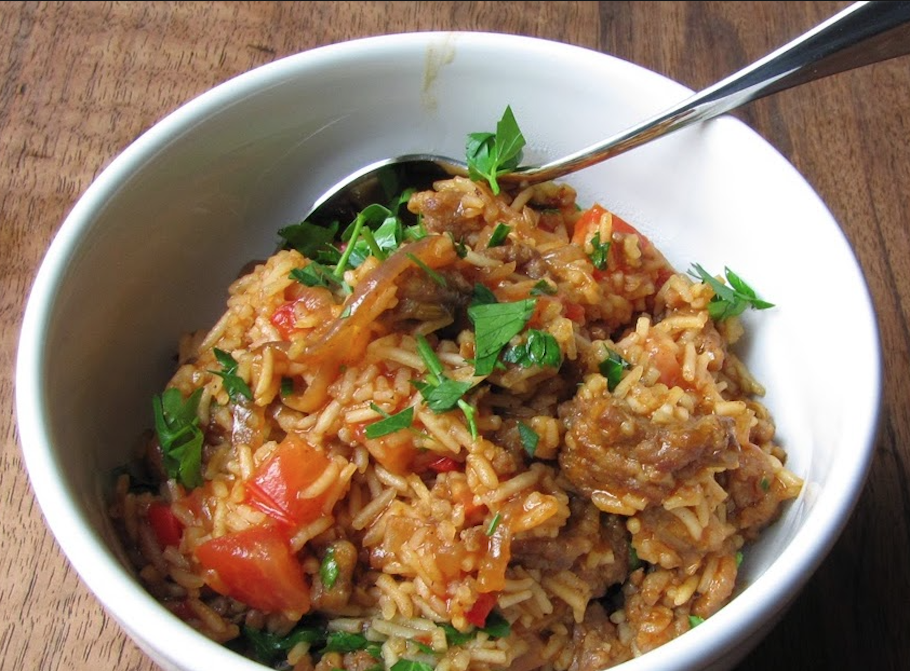

Time: 40-50 minutes
Servings
0A more heavy but tasty meal
Ingredients
- .5 of a red onion, sliced
- 1 red bell pepper, deseeded and chopped
- 3 cloves of garlic, chopped
- paprika to taste
- 5 spicy italian suasages, removed from casing
- 1 cup of rice
- 1 cups of chicken stock
- .5 of a cup of white wine
- Green onion to garnish
- 2 tablespoons of Olive oil